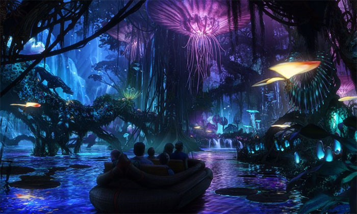
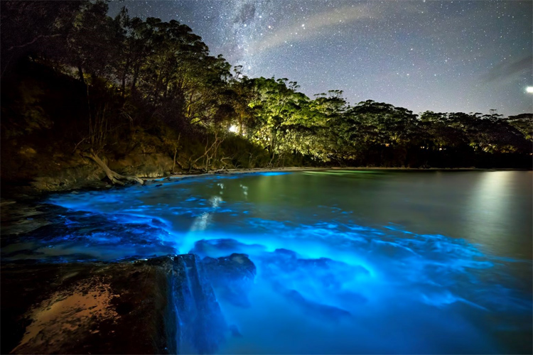
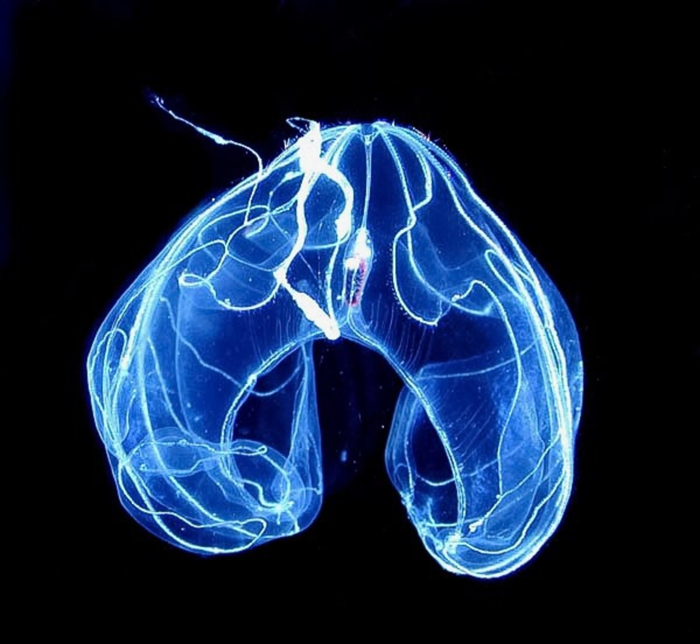
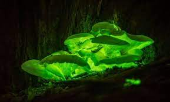

| Welcome-center | |
|---|---|
|  | ‘Welcome to Earth” seems something of a misnomer: “Welcome to Yourself” might have been better, even if it has the ring of self-improvement about it. But who is to say that a nature show won’t make us better people? Hosted by actor Will Smith, who is convincingly and charmingly apprehensive about what he’s about to dive into, the six-part series relates to the world as the world relates to our senses, or eludes them: From the depths of the sea to the rim of a volcano, there are sounds, smells and colors that we don’t normally experience, because they’re ignored, obscured or out of our reach. What “Welcome to Earth” explores, like a Mungo Park of the mind, are not just places but human perceptions, and the crafty ways Mother Nature conceals herself. |
| Coast-view | |
|  | Bioluminescent creatures are found throughout marine habitats, from the ocean surface to the deep seafloor. The light emitted by a bioluminescent organism is produced by energy released from chemical reactions occurring inside (or ejected by) the organism. |
| Animals | |
|  | This lanternfish (Diaphus sp.), found in the Red Sea, has light-producing photophores along its ventral surface (belly), and a nasal light organ that acts like a headlight. (E. Widder, ORCA, www.teamorca.org) Bioluminescence occurs through a chemical reaction that produces light energy within an organism's body. For a reaction to occur, a species must contain luciferin, a molecule that, when it reacts with oxygen, produces light. There are different types of luciferin, which vary depending on the animal hosting the reaction. Many organisms also produce the catalyst luciferase, which helps to speed up the reaction. |
| Wild | |
|  | Bioluminescence is the ability of living organisms to create their own light, using a chemical reaction. On land, the phenomenon of bioluminescence is rare — limited to fireflies, some mushrooms, glowworms, and a few other organisms. But in the ocean, bioluminescent animals create an underwater light show. |